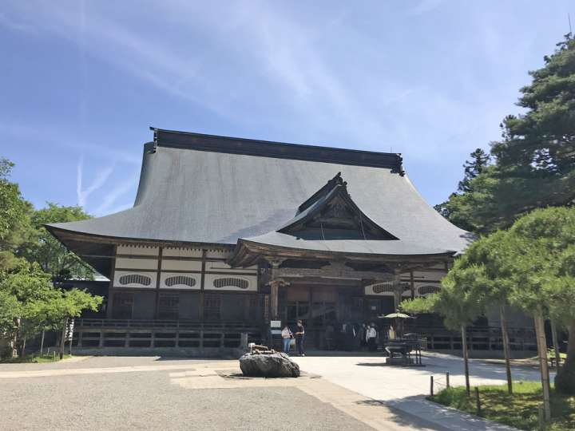

岩手の魅力
食事
観光
都市伝説
文化
観光
猊鼻渓
100メートル級の岩の壁の間を日本で唯一、竿一本のみで操る舟で行き来します。 春の藤と新緑、秋の紅葉と、冬の水墨画の世界になる風景は特におすすめです。
龍泉洞
龍泉洞は日本三大鍾乳洞の一つとされ、また洞内に棲むコウモリと共に国の天然記念物に指定されています。
中尊寺

中尊寺には平安時代の美術、工芸、建築品などの文化財が多数保管されています。